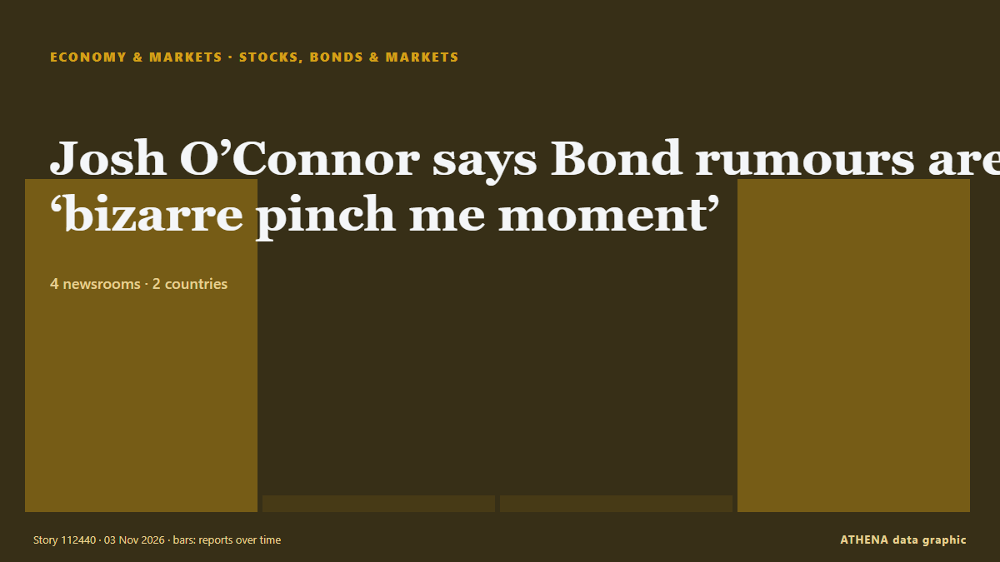

الأسهم والسندات والأسواق
| 21 أكتوبر | 0 |
|---|---|
| 22 أكتوبر | 0 |
| 23 أكتوبر | 0 |
| 24 أكتوبر | 0 |
| 25 أكتوبر | 0 |
| 26 أكتوبر | 1 |
| 27 أكتوبر | 0 |
| 28 أكتوبر | 0 |
| 29 أكتوبر | 0 |
| 30 أكتوبر | 4 |
| 31 أكتوبر | 1 |
| 1 نوفمبر | 1 |
| 2 نوفمبر | 11 |
| 3 نوفمبر | 4 |
تُعرض العناوين بالإنجليزية كما نُشرت.

Josh O’Connor says Bond rumours are a ‘bizarre pinch me moment’
The Crown star, 36, is believed to be in the running for the role alongside One Night Only actor Callum Turner and Slow Horses’ Jack Lowden. من Evening Standard (London)
Republicans could pay political price for surging oil prices in US midterms
Middle East conflict drives nearly 40% surge in US gasoline prices, increasing pressure on Trump and his party. من Anadolu Agency (English)
Taoiseach flags 'big threat' weeks after households told to stock up on food and water
Micheal Martin said cyber attacks are global and a “constant danger” to the private and public sectors. من Irish Mirror
Tech losses weigh on global markets ahead of US midterm elections, while oil prices rise
HONG KONG, Nov 3, (AP): Global shares were mixed and oil prices retreated Monday, falling sharply on renewed hopes for progress in diplomatic efforts between the US and Iran. من Arab Times
(URGENT) Seoul shares dip over 3 pct amid escalating AI woes
SEOUL, Nov. 3 (Yonhap) -- South Korean stocks plunged more than 3 percent Tuesda... من Yonhap (English)
An unusual sexual bond between a bull and a male donkey
Sex between animals of the same sex is widespread in nature. من Phys.org
S&P cuts Meta’s outlook to negative
Meta has been given a negative outlook by S&P Global Ratings due to the company's hefty capital expenditures and concerns about free cash flow. من CNBC World
China steps up monetary policy support to bolster stock market
The central bank is conducting swaps and upgrading a re-lending scheme to inject liqudity into the market. من The Business Times
Alphabet launches €6B bond sale in first test of AI debt since selloff
Google’s parent company Alphabet began selling €6bn ($6.7bn) of bonds on Monday. من The Next Web
Anthropic IPO outlook sharpens as revenue surges but compute costs raise new questions
Anthropic has given investors a much clearer look at the financial profile behind one of the most anticipated technology IPOs of the year. من FXStreet
Anthropic IPO: Sharesies among eight brokers chosen for Australian retail offer
Investors can't apply for shares until Anthropic releases an Australian prospectus. من BusinessDesk
Asian stocks mixed as tech sector struggles to rebound from selloff
Artificial intelligence (AI)-linked firms were hit by another wave of selling as Wall Street giants including Amazon, Alphabet and Microsoft signalled they would keep pouring money into data centres… من CNA (Channel NewsAsia)
Palantir reports booming U.S. commercial revenue growth, topping government for first time
Palantir's commercial revenue jumped 148% to $984 million, surpassing government revenue of $953 million. من CNBC World
Warren Buffett, 96, has ‘not had water in 48 years’: ‘No thank you. I’ll have a…’
Jeff Bezos shared insights on investing in artificial intelligence stocks while discussing broader market trends. من Times of India
Anthropic plans to sell $3.5 billion of shares to Japan investors in IPO, filing shows
This will go towards raising working capital and funding operating expenses and capital expenditure. من The Business Times
OPay Halts $4 Billion NYSE IPO on Listing Day
OPay, a digital financial platform built for emerging markets, has decided to postpone its planned initial public offering due to “an ongoing inquiry by a regulatory authority,” the company said in a… من PYMNTS
CJP backs INDIA bloc's Ramlila Maidan rally, but won't participate in it, says Dipke; cites ‘neutral platform’ identity
Abhijeet Dipke said the CJP supported the cause but would maintain its independent identity. من Hindustan Times